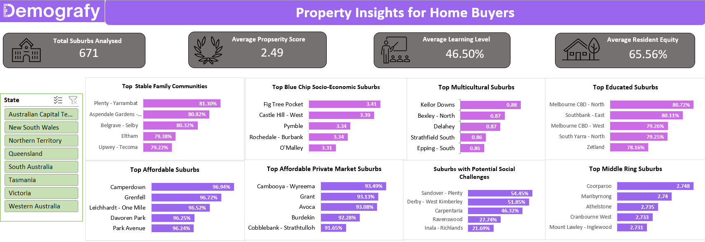
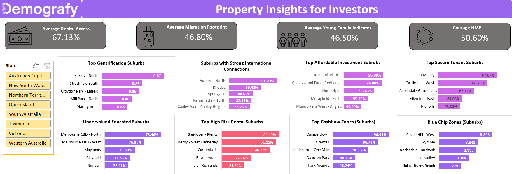
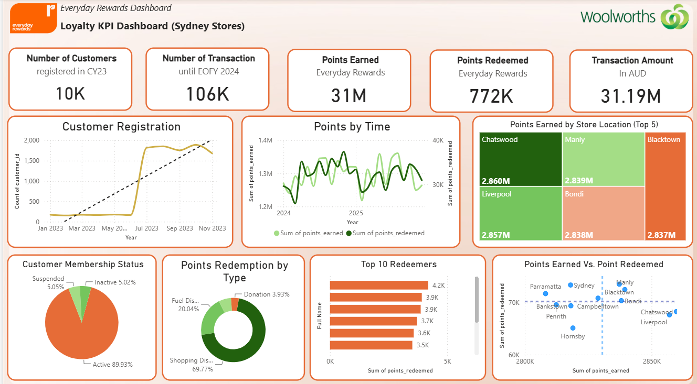
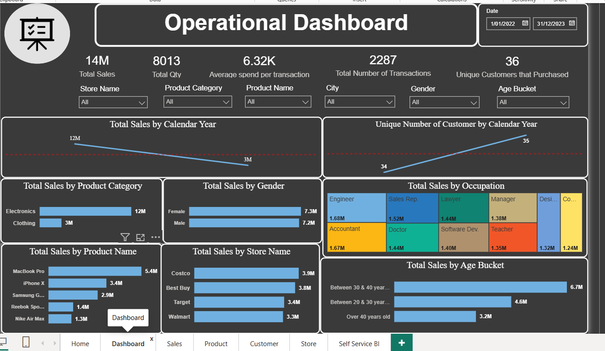
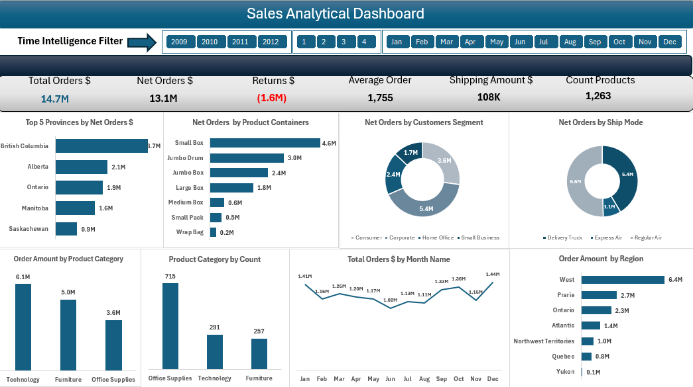
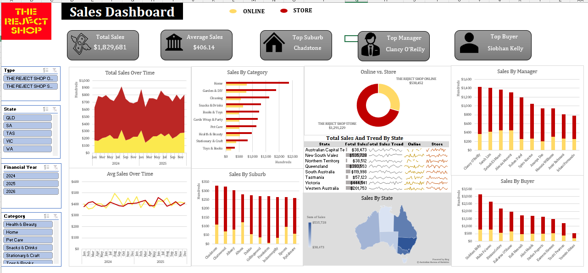

Data Analyst · Power BI · Python · SQL · Local Government · Learning Analytics
Master of Business Analytics graduate building end-to-end analytics solutions that turn complex datasets into decisions. Specialising in Power BI dashboards, SQL, Python automation, and performance reporting across local government, property intelligence, and learning analytics sectors in Australia.
I'm a Perth-based Data & Analytics professional with a Master of Business Analytics from Kaplan Business School and hands-on experience delivering end-to-end analytics solutions across local government, property intelligence, and data analytics sectors.
At the Shire of Mundaring I built performance dashboards across 118,000+ customer service records, developed an NLP-based classification tool in Python that automated manual categorisation processes, and produced workforce and operational analytics that directly informed management decisions — including identifying patterns that supported continuous improvement across service delivery.
At Demografy I am currently building 4 new KPIs in BigQuery SQL across ABS Census tables, extending a 14-KPI Master Table, and validating insights through a stakeholder-facing Power BI dashboard addressing 10 business questions across investor, homebuyer, and policy officer audiences.
I thrive in roles that combine data analysis, dashboard reporting, process automation, and cross-functional stakeholder collaboration — particularly where insights drive measurable improvement in program or operational performance.
End-to-end analytics projects spanning retail loyalty, property intelligence, sales operations, and local government — each built from raw data to executive-ready insights.
Extending a production KPI framework using GCP BigQuery SQL across multiple ABS Census tables. Building and validating new KPI metrics, integrating them into a Master Table joinable by geographic code, and producing a stakeholder-facing Power BI dashboard addressing structured business questions across investor, homebuyer, and policy officer audiences.

Built for Demografy during my current internship. Analyses 671 Australian suburbs across livability, community stability, affordability, and education level to help homebuyers make confident, data-driven suburb decisions.

Companion investor dashboard covering gentrification signals, cashflow zones, capital growth opportunities, and risk indicators across 671 Australian suburbs using ABS Census 2021 data.

Multi-page loyalty analytics dashboard covering 10K customers and 106K transactions across Sydney stores. Includes drill-through by store location with individual store performance cards comparing each store to the system average.

Professional multi-page Power BI report with branded navigation home page and 6 tabs. Covers $14M in sales across product categories, customer demographics, and store performance — with a Self-Service BI page for end users.

Advanced Power BI dashboard with dynamic year, quarter, and month filters. Covers $14.7M in orders with provincial breakdown, product container analysis, shipping mode comparison, and seasonal monthly trends across a 4-year time span.

National retail analytics dashboard with geographic state map, category performance, manager and buyer rankings, and online vs store channel comparison. NSW leads at $536K with Victoria second at $444K across 8 states and territories.
Analytics and data roles across local government, property technology, and research sectors in Perth WA.
Available for Data Analyst, Junior Data Analyst, Business Improvement Analyst, Corporate Planning, and Performance Reporting roles — permanent or contract — across local government, analytics, learning, and public sector organisations.